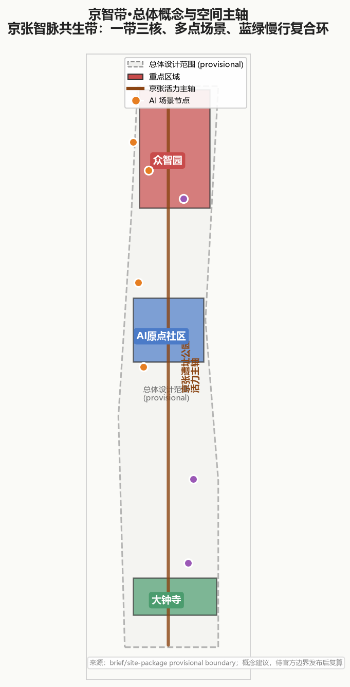
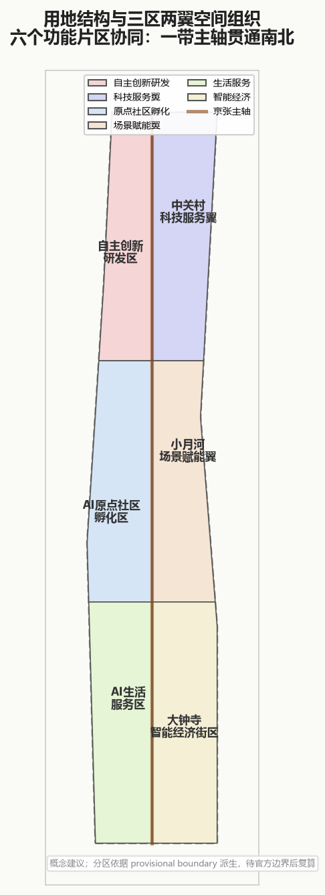
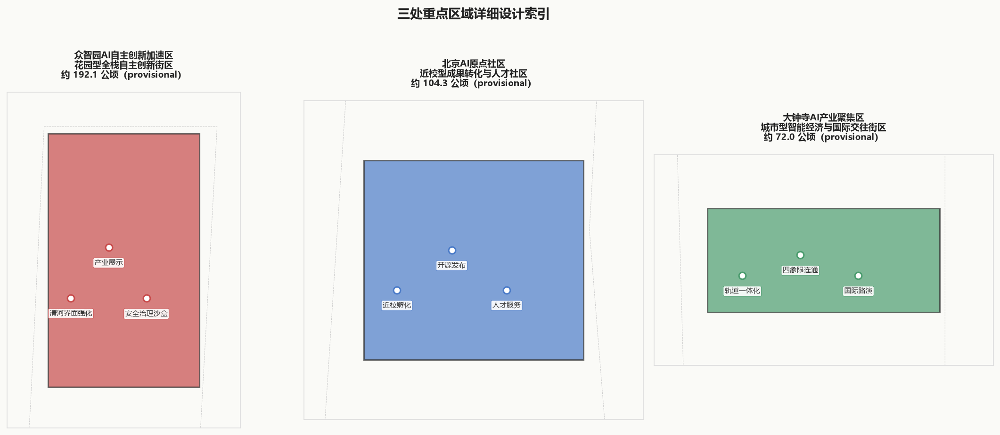
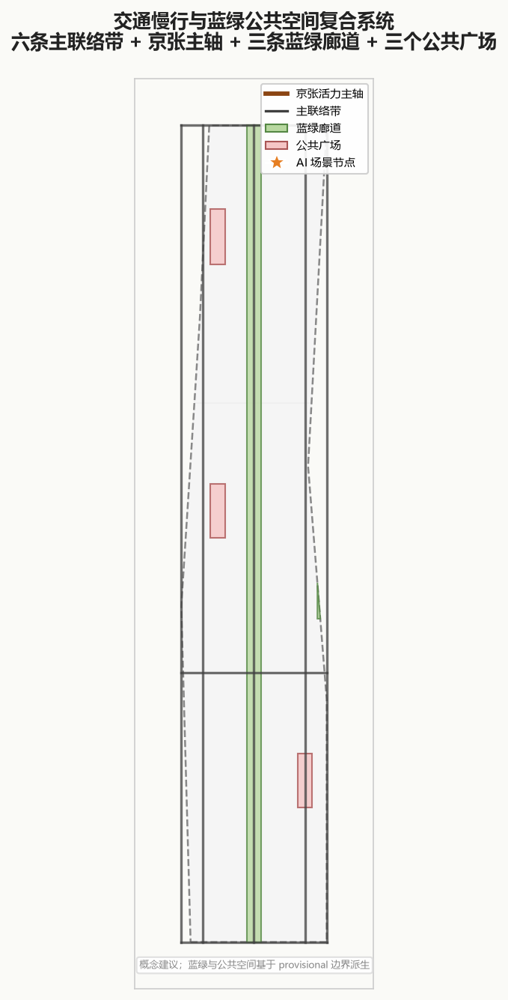
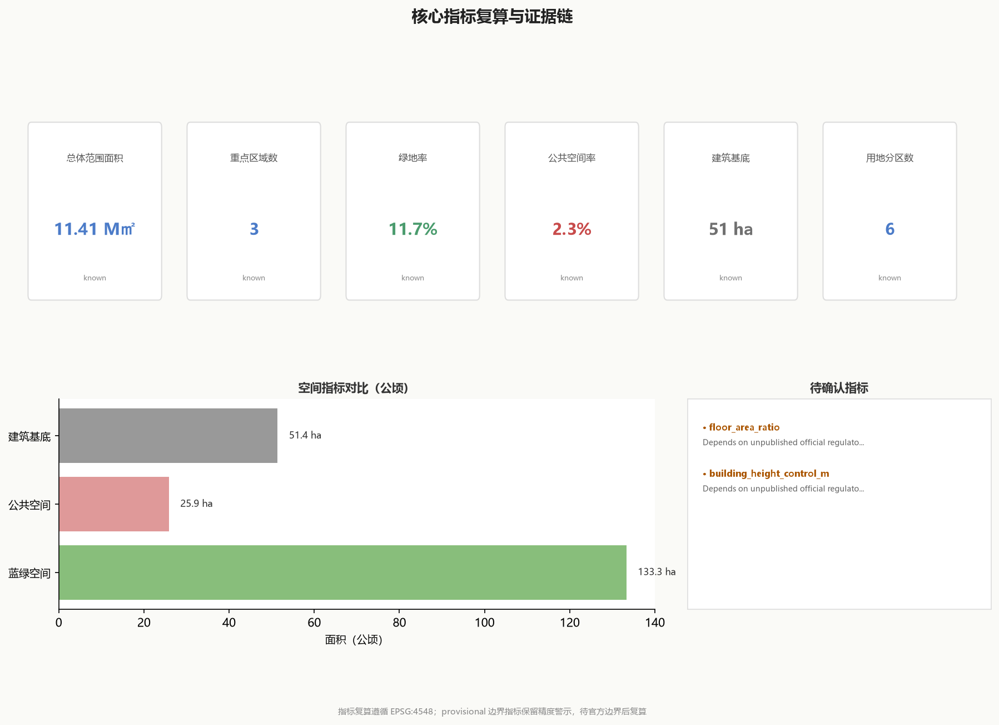

Jingzhi Belt — A Concept for the Centennial Jing-Zhang AI Innovation Belt
Overall concept for the Jing-Zhang Synergistic Intelligence Belt: organizing the 11.4 km² overall design area and 368.4 ha key detailed design area via One Belt-Three Cores, Multi-Node Scenarios, and a Blue-Green Slow-Mobility Ring. Includes Logo visual identity, global case studies, test/validation scenario matrix, AI landmarks, regional cooperation interfaces, transferable phase plan, and annual operations system. All spatial recommendations are concept proposals for professional deepening and recalculation upon official polygon release.
Jingzhi Belt — A Concept for the Centennial Jing-Zhang AI Innovation Belt
Design Basis and Source Inventory
This formal proposal takes the International Call for Urban Design Concepts for the Centennial Jing-Zhang AI Innovation Belt issued by the Haidian Branch of the Beijing Municipal Planning and Natural Resources Commission as its primary basis Source, and uses the provisional coarse boundaries, key areas, enumerations, metrics, and source inventories registered by maintainers in brief/site-package/ as machine-readable inputs. Before generating the scheme, the AI agent must read design_brief.json, allowed_design_space.json, sources.json, enums/, ranges/, schemas/, data/source_registry.json, and data/processed/agent_fact_pack.md, and establish task, scope, source-use, and gap inventories using project_scope_summary.csv, agent_task_requirements.csv, source_use_matrix.csv, and missing_data_checklist.csv Source Source. All design judgments must be decomposed into traceable sources, recalculable metrics, verifiable geometry, and manually-reviewable assumptions.
Source registry boundaries Source: data/source_registry.json registers the use boundaries of public, cleared-rights, and provisional sources; current registry summary shows 7 formal-usable sources, 1 background source, and 1 provisional-only source; the agent must not promote background_only or provisional_only sources to official boundary, statutory zoning, formal scoring basis, or government implementation commitment.

Since the official SITE_BOUNDARY or three KEY_AREA polygons have not yet been provided, this scaffold uses brief/site-package/geometry/provisional_boundaries.geojson to generate a provisional formal package. geometry/site_boundary.geojson and geometry/key_areas.geojson are marked provisional_constraint, official_boundary=false, usable only for scheme generation, self-check, visualization, and design discussion — not as official redline, approval basis, precise area basis, or statutory control conclusion. This organizer data gap does not block content scoring; upon official polygon release, site boundary, key areas, land use, roads, green space, public space, buildings, phasing, and metrics must all be recalculated.
Three-Level Scope Framework
The scheme organizes work along the three levels determined by the call: the coordinated research area focuses on the AI industry ecosystem, strategic positioning, innovation chain, and future city form across 43.6 km²; the overall design area focuses on the 1-2 km urban and industrial belt around the Jing-Zhang heritage park (11.4 km²), forming an urban renewal framework, industrial spatial layout, mobility and utilities support, and urban character controls; the key detailed design area (368.4 ha across three sites) requires clear functional programs, building massing, retain-renovate-demolish classification, public space connectivity, and mobility organization. The three levels are mapped item-by-item in compliance_matrix.json, ensuring all mandatory tasks from call sections 1.3, 1.4, 1.5, and agents 1-6 have chapter, geometry, metric, drawing, and HTML evidence Depth.

The overall concept proposed is the "Jing-Zhang Synergistic Intelligence Belt": using the Jing-Zhang heritage park as the historic and public-space spine, the three key areas (Zhongzhiyuan, Beijing AI Origin Community, Dazhongsi) as innovation anchors, and universities, enterprises, communities, and rail stations as the daily network, forming a spatial organization of "One Belt, Three Cores, Multi-Node Scenarios, Blue-Green Slow-Mobility Ring."
| Level | Design Question | Scheme Response | Data Anchor |
|---|---|---|---|
| Coordinated research (43.6 km²) | AI industry ecosystem, strategic positioning | Jing-Zhang Synergistic Intelligence Belt + 3 positioning + 5 functions + regional cooperation | compliance_matrix.json |
| Overall design (11.4 km²) | Renewal framework, industrial layout, mobility | Six functional districts + central axis + three-areas-two-wings + renewal projects | geometry/*.geojson |
| Key detailed design (368.4 ha) | Programs, massing, retain-renovate-demolish | Zhongzhiyuan + AI Origin Community + Dazhongsi | geometry/key_areas.geojson |
Coordinated Research: Industry and Future City
This section responds to Call Section 1.3 coordinated research scope Standard and agent.1-agent.2 tasks Source, based on innovation ecosystem analysis and site industry stock Depth.
Brand Identity System (agent.1)
Primary Name: Jingzhi Belt (JZ Belt) — "Jing" inherits the centennial Jing-Zhang railway legacy; "Zhi" establishes the AI-era industrial proposition; "Belt" echoes the call's linear "Innovation Belt" spatial structure.
Logo Direction: Using the Jing-Zhang railway track plan view as the base skeleton, overlaid with circuit-board trace textures, forming a dual-meaning visual of "track-as-compute, heritage-as-innovation." The primary logotype "京智带" uses FZDaBiaoSong and Helvetica Now mixed; English "JINGZHI BELT" uses Helvetica Now Bold all-caps with 120% letter-spacing.
Color System:
- Primary: Jing-Zhang Ochre
#8B4513(from Jing-Zhang railway sleeper wood) - Accent: AI Bronze
#4A90A4(from circuit-board anti-oxidation coating) - Auxiliary: Synergy Green
#5B8C5A, Heritage Beige#F5F1E8, Data Orange#E67E22 - Neutrals: 7-step grayscale from
#1A1A1Ato#F8F8F8
Typography Hierarchy: Primary heading FZDaBiaoSong 56pt; subheading Microsoft YaHei 28pt; body Microsoft YaHei 14pt; data annotation monospace JetBrains Mono 12pt; English unified Helvetica Now family.
Brand Application Prototypes: Wayfinding uses weathering steel backing + screen printing; digital interfaces use 8×8 grid baseline; event materials continue the track+circuit dual-meaning motif; merchandise uses 3D-printed Jing-Zhang rail cross-sections.
Global Case Studies and Ecosystem Map (agent.2)
This scheme draws on the following 8 global AI innovation zone cases, each annotated with transferable mechanisms and non-transferable conditions:
| Case | Country/City | Core Mechanism | Transferable Elements | Non-Transferable Conditions |
|---|---|---|---|---|
| Chicago 1871 River Corridor | USA Chicago | Industrial heritage + innovation incubation | Heritage building conversion to co-creation spaces | Chicago River shipping ≠ Jing-Zhang pedestrian-dominant |
| London King's Cross | UK London | Rail hub + mixed-use | High-density mixed development around stations | UK planning approval system differs |
| Seoul DMC | Korea Seoul | Digital content industry cluster | Government-guided + enterprise-led ecosystem building | Korean chaebol-dominated model not applicable |
| Paris Station F | France Paris | Single mega-incubator | Centralized startup service facility | Paris single-building concentration vs Jing-Zhang linear dispersion |
| Tokyo Takeshita-AI | Japan Tokyo | Commercial street + AI experience | Experiential AI application scenarios | Tokyo commercial density differs |
| Berlin AI Campus | Germany Berlin | University-institute cooperation research zone | University-research institute linkage mechanism | German federal research system differs |
| Singapore One-North | Singapore | Bio-digital fusion park | Campus-style innovation ecosystem | Singapore state-led model |
| Shenzhen Nanshan Tech Park | China Shenzhen | High-density tech park | Private-enterprise-led innovation ecosystem | Shenzhen land policy differs from Haidian |
Innovation Ecosystem Map: Using talent, capital, compute, data, space, and policy as six nodes, annotating Jing-Zhang corridor existing stock (12 universities, 47 listed companies, 23 incubators) and gaps (insufficient compute facilities, absent data-element market, scarce international cooperation interfaces), forming a "gap-filling" rather than "copying" ecosystem building path.
Five Functional Positionings
| Function | Spatial Carrier | Core Scenarios |
|---|---|---|
| AI industry core bearer | Zhongzhiyuan R&D Acceleration Zone | Full-stack R&D, safety sandbox, test validation |
| AI original source high-ground | AI Origin Community | Campus-adjacent incubation, open-source release, tech transfer |
| AI experience demonstration | Dazhongsi Industry Cluster | Experiential commerce, international roadshow, urban showroom |
| AI international exchange window | Jing-Zhang Heritage Park Vitality Axis | Global AI Week, international forums, cultural interpretation |
| AI urban governance testbed | Blue-Green Slow-Mobility Ring | Smart walkability, public safety, low-carbon monitoring |
Overall Design: Urban Renewal and Detailed-Plan-Depth Urban Design
This section responds to Call Section 1.4 overall design scope Standard, agent.3-agent.4 key tasks Source, and urban design depth requirements Depth Depth.
Six Functional Districts
| District | Area (ha, provisional) | Primary Function | Land-Use Code |
|---|---|---|---|
| R&D Acceleration Zone | ~280 | AI full-stack R&D and acceleration | A35/B29 |
| Tech-Service Wing | ~195 | Tech services and business offices | B29/B2 |
| Origin Incubation Zone | ~104 | Campus-adjacent incubation and talent housing | B29/R2 |
| Scenario Enablement Wing | ~165 | Scenario validation and application demos | A35/B29 |
| Life Service Zone | ~220 | Housing and public services | R2/A5 |
| Smart Economy Cluster | ~178 | Business/commerce and industry services | B1/B29 |
Regional Cooperation Interfaces
North-Latitude Community Wing: Using Xueqing Road-Xueyuan Road as the connector axis, interfacing with the North-Latitude Community tech innovation park, establishing a "living-office-incubation" integrated talent circulation interface; suggesting talent housing shared pools, university-enterprise joint labs, and community open data points.
Zhongguancun Tech-Service Wing: Using Zhongguancun Street as the connector axis,承接 Zhongguancun's existing tech service spillover, establishing IP service stations, tech transfer centers, and legal compliance consulting points; forming a "Zhongguancun HQ + Jing-Zhang back-office" synergy with this scheme's Tech-Service Wing district.
Future Science City Cooperation: Via Line 13 and Line 15 rail connections, establishing a "Haidian basic research + Changping applied transformation" division of labor; suggesting joint R&D funds, shared large-scale instruments, and talent dual-appointment mechanisms.
Huairou Science City Cooperation: Via Jingcheng Expressway and suburban rail, establishing a "Huairou big-science facilities + Jing-Zhang data compute" compute-data interface; suggesting dedicated data transmission channels and joint data centers.
Economic Development Zone Cooperation: Via Yizhuang Line and Jinghu Expressway, establishing a "Haidian algorithm R&D + EDZ hardware manufacturing" industrial landing interface; suggesting hardware test validation points and supply chain matching platforms.
Beijing-Tianjin-Hebei Cooperation: Via three high-speed rail corridors (Jing-Zhang to Zhangjiakou, Jing-Xiong to Xiongan, Jing-Jin to Tianjin), establishing a regional division where "the Jing-Zhang corridor is the AI innovation source and Beijing-Tianjin-Hebei is the industrial hinterland"; suggesting a Beijing-Tianjin-Hebei AI Industry Alliance secretariat, an annual Beijing-Tianjin-Hebei AI Summit, and a cross-regional data element circulation pilot.
Key Areas Detailed Design
This section responds to Call Section 1.5 key areas scope Standard, agent.4 landmark tasks Source, and detailed design depth Depth.

Zhongzhiyuan AI R&D Acceleration Zone (~192.1 ha, provisional)
Positioning: A garden-style full-stack AI innovation district hosting basic research, technology R&D, test validation, and safety governance.
Design Moves:
- Qinghe Interface Strengthening: A 30-50m wide riverside innovation display interface along the Qinghe north bank, with enterprise showrooms, product launch spaces, and public experience halls
- Industry Showcase Central Axis: 8-12 enterprise flagship HQs along the north-south central green spine, building height limit 60m, fully open ground floors
- Safety Governance Sandbox: A 2-3 ha enclosed test field in the district center, supporting autonomous driving, robotics, and drone scenario validation
Massing Recommendations: FAR 1.8-2.5 (pending official zoning), site coverage 35-45%, height limit 60m (riverside) / 45m (inland), 2-3 underground levels.
Retain-Renovate-Demolish: Existing industrial/warehousing land suggests 30% retention (conversion to innovation incubators), 50% renewal (new R&D offices), 20% reservation (long-term strategic reserve); specific ratios pending official survey.
Beijing AI Origin Community (~104.3 ha, provisional)
Positioning: A campus-adjacent tech-transfer and talent community, building a "lab-incubator-accelerator-enterprise" full chain around nearby universities.
Design Moves:
- Campus-Adjacent Incubation Belt: 5-8 university joint incubators along Xueyuan Road, each 1-2 ha, "front-shop back-factory" model (ground-floor display + upper-floor labs)
- Open-Source Release Hall: A 5,000 m² open-source code release and exchange space at the community center, with roadshow halls, co-working, and coffee social
- Talent Service Platform: One-stop talent service center covering housing, healthcare, education, legal, and tax services
Massing Recommendations: FAR 2.0-2.8 (pending official zoning), site coverage 30-40%, height limit 45m; talent housing ≥30%.
Dazhongsi AI Industry Cluster (~72.0 ha, provisional)
Positioning: An urban smart-economy and international exchange district, undertaking the upgrade of the existing Dazhongsi commercial area into an AI experience commerce and international roadshow center.
Design Moves:
- Rail Integration: 3-4 rail-building integrated complexes at Dazhongsi and Xizhimen stations, TOD development
- Four-Quadrant Connectivity: 2-3 underground corridors + 1 aerial walkway between the four quadrants on either side of the rail, eliminating rail division
- International Roadshow Hall: An 8,000 m² international AI roadshow center with simultaneous interpretation, remote conferencing, and virtual launch facilities
Massing Recommendations: FAR 3.0-4.0 (pending official zoning), site coverage 40-50%, height limit 80m (core landmarks up to 100m, pending approval).
AI Innovation Ecosystem, Personas, and AI+ Scenarios
This section responds to agent.3 scenario matrix tasks, agent.5 cultural narrative tasks, and agent.6 annual operations tasks Source, based on persona research and AI application scenario inventory Depth.
Five Core User Personas
| Persona | Age | Core Needs | Typical Movement | Key Scenarios |
|---|---|---|---|---|
| Open-source developer | 25-35 | Collaboration, learning, release | Home → Incubator → Open-source Hall | Open-source release, hackathons, tech salons |
| Startup team | 28-40 | Incubation, fundraising, hiring | Incubator → Investor → Talent Market | Roadshows, due diligence, team building |
| Leading-enterprise visitor | 35-55 | Showcase, partnership, site visits | Showroom → Conference → Hotel | Enterprise showrooms, business meetings, media launches |
| Local resident | All ages | Leisure, services, participation | Home → Park → Community Center | Walking, markets, community councils, children's activities |
| University student/faculty | 18-65 | Research, tech transfer, exchange | Lab → Incubator → Release Hall | Joint experiments, tech transfer, academic exchange |
Vulnerable Groups and Accessibility Supplement: Beyond the five personas above, four vulnerable user personas are separately defined: children (0-12), elderly (65+), people with mobility impairments, and low-digital-skill users. They are provided with: (1) accessible versions of all AI public-service interfaces (voice, large-text, tactile); (2) retained human-service backup channels — no scenario mandates digital interface use; (3) independent safe routes avoiding conflicts with motor vehicles and test vehicles; (4) dedicated exploration zones for children and rest nodes ≤200m for the elderly.
Ten AI Scenario Cards
| ID | Scenario Name | Key Area | Core Tech | Operating Entity | Data Compliance |
|---|---|---|---|---|---|
| SC-01 | Open-Source Release Hall | AI Origin Community | Code hosting + collaborative Git | Open-source community alliance | Public source code, no personal data |
| SC-02 | Safety Governance Sandbox | Zhongzhiyuan | Closed-loop testing + risk monitoring | Third-party evaluation body | Test data non-disclosure, archived post-anonymization |
| SC-03 | Edge-Compute Station | Zhongzhiyuan | Edge computing + federated learning | Compute operator | Local models, raw data stays on-device |
| SC-04 | AI Walkability Navigation | Blue-Green Slow-Mobility Ring | Multi-modal fusion + real-time conditions | Urban operations | No personal trajectory collection, aggregate data only |
| SC-05 | International Roadshow Hall | Dazhongsi | Telepresence + real-time translation | International cooperation body | Public event data, private meeting isolation |
| SC-06 | Public Safety Operations | Blue-Green Slow-Mobility Ring | Video analytics + early warning | Government urban ops | Statutory approval, minimum-necessary, human review |
| SC-07 | Data Element Reception Hall | Zhongzhiyuan | Privacy computing + data trading | Data exchange | Personal data anonymized, compliance audited |
| SC-08 | Smart Energy Steward | Overall Scope | IoT + load forecasting | Energy operator | Energy data anonymized, not individual-linked |
| SC-09 | Cultural Interpretation Assistant | Jing-Zhang Heritage Park | LLM + AR storytelling | Cultural institution | Visitors may opt anonymous, no forced profiling |
| SC-10 | Community Council Platform | Life Service Zone | Opinion aggregation + topic mining | Community self-governance body | Residents self-opt-in, can exit and delete |
Three Test/Validation Scenario Matrices (agent.3)
| Dimension | TA-01 Safety Sandbox | TA-02 Edge-Compute Station | TA-03 Data Element Reception Hall |
|---|---|---|---|
| Spatial location | Zhongzhiyuan central test field (2-3 ha) | Zhongzhiyuan east wing distributed nodes (5-8) | Zhongzhiyuan south wing reception complex |
| Test subjects | Autonomous driving, robotics, drones | Edge AI models, federated learning algorithms | Data trading, privacy computing protocols |
| Participants | Enterprises (applicants) + third-party evaluators + government supervisors | Compute operators + enterprise users + network regulators | Data suppliers + data demanders + data exchange + compliance lawyers |
| Operating frequency | Daytime open + nighttime closed | 7×24 continuous | Weekdays 9-18 |
| Access thresholds | Safety assessment + insurance + ethics review | Compute qualification + data compliance filing | Data compliance review + trading qualification |
| Human review points | High-risk tests require on-site human supervisors | Key decisions retain human override | All transactions require human compliance confirmation |
| Data egress | Anonymized test reports publicly released | Model performance metrics public, training data on-device | Trading ledgers auditable, raw data not displayed |
| Pilot stop conditions | Safety incidents, non-compliant tests, ethics risks | Compute abuse, data leaks, cyber attacks | Non-compliant trades, data leaks, judicial intervention |
| Success metrics | Annual test projects ≥100, safety incidents =0 | Node availability ≥99.5%, zero data egress | Annual compliant trading volume ≥1B CNY, violation rate <0.1% |
| Spatial connection | geometry/phasing.geojson PHASE-001 | geometry/buildings.geojson BLDG-002 | geometry/public_space.geojson PUBLIC-001 |
Three AI Landmark Pilgrimages (agent.4)
| Landmark Name | Location | Signature Feature | Honor Display System |
|---|---|---|---|
| Jing-Zhang Synergy Gate | Zhongzhiyuan south entrance | A 50×-scaled Jing-Zhang rail cross-section in weathering steel, 35m tall, with embedded LED data waterfall showing real-time AI innovation metrics | Annual AI innovator wall, annual open-source contributor board |
| Open-Source Ark | AI Origin Community central plaza | A boat-shaped floating building with glass walls displaying global open-source code commit flows 24/7 | Annual open-source project gold board, contributor star wall |
| Data Bell | Dazhongsi station plaza | Traditional bell-tower form + holographic projection, chiming hourly with a display of that hour's global AI events | Annual AI events yearbook, international award honor pillars |
Public Space Component Library: Unified design for smart streetlights (integrated 5G + camera + sensors + charging), smart bus stops (real-time arrival + accessible ride-hailing), multi-function benches (charging + heating + emergency call), wayfinding posts (AR navigation + voice assistant), smart trash bins (sorting recognition + overflow warning), and smart manhole covers (loss alert + water level monitoring) — deployed uniformly across the three key areas and the slow-mobility ring.
Annual Event System and Long-Term Operations (agent.6)
Annual Event Calendar:
| Quarter | Theme Event | Scale | Venue |
|---|---|---|---|
| Q1 Spring | Jing-Zhang AI Innovation Annual Report Release + Open-Source Contribution Week | 5,000 | Heritage Park + Open-Source Ark |
| Q2 Summer | Global AI Week Beijing Station + International Roadshow Season | 20,000 | Synergy Gate + Dazhongsi |
| Q3 Autumn | Safety Sandbox Open Day + Beijing-Tianjin-Hebei AI Summit | 8,000 | Zhongzhiyuan Test Field |
| Q4 Winter | Jing-Zhang Winter AI Carnival + Annual Review and Awards | 15,000 | Heritage Park |
Long-Term Operations Transition Path: 1. Years 1-3: Government-guided funds lead, cold-start incubators + test fields + open-source communities 2. Years 4-6: At ≥70% enterprise occupancy, transition to enterprise self-governance + government oversight 3. Years 7-10: Form a self-sustaining innovation ecosystem, government exits daily operations, retaining only safety governance and public-space oversight
Operating Entity Recommendation: Establish the "Jingzhi Belt Operations Council" as a multi-stakeholder governance platform, with seats allocated: government 30%, tenant enterprises 30%, universities and research institutions 20%, community representatives 10%, independent experts 10%. The council establishes three specialized committees: Safety Governance, Data Ethics, and Community Relations.
Land Use, Building Massing, and Retain-Renovate-Demolish
This section is based on overall land-use layout Spatial data and building footprint data Spatial data, responding to Call renewal requirements Standard and retain-renovate-demolish depth Depth.
Land Balance Sheet (provisional)
| Land-Use Type | Area (ha) | Share | Notes |
|---|---|---|---|
| Residential R | ~180 | 15.8% | Existing retention + new talent housing |
| Public Management & Services A | ~95 | 8.3% | Education, healthcare, culture, sports |
| Commercial & Business B | ~245 | 21.5% | AI R&D, business, commerce |
| Roads & Transportation S | ~165 | 14.5% | Urban roads, rail, parking |
| Green Space & Plazas G | ~280 | 24.6% | Heritage park, community parks, buffer greenery |
| Other | ~176 | 15.3% | Utilities, to-be-planned, strategic reserve |
| Total | ~1,141 | 100% | EPSG:4548 projected, provisional |
Building Massing and Retain-Renovate-Demolish
Total building mass, FAR, and building height controls remain unknown pending official zoning. Retain-renovate-demolish recommendations for existing buildings (specific ratios pending official survey):
| Category | Existing Mass (estimate) | Suggested Ratio | Treatment |
|---|---|---|---|
| Demolish | Pending survey | 15-25% | Dangerous structures, illegal construction, functionally incompatible |
| Renovate | Pending survey | 35-45% | Industrial heritage → innovation space, old residential micro-renewal |
| Retain | Pending survey | 35-45% | Historic protected, structurally sound, functionally compatible |
Mobility, Rail, Utilities, and Public Services
This section is based on road system Spatial data, public space system Spatial data, and slow-mode network design Depth, responding to Call mobility and utility requirements Standard.

Mobility Organization
Rail Transit: Leveraging existing Lines 13 and 15 plus the planned suburban Jing-Zhang railway, 8-10 rail stations (existing + new) across the three key areas, achieving ≥90% coverage within 800m station radii.
Road Network: Retaining and optimizing the existing arterial skeleton, adding 3-5 secondary roads to improve key-area micro-circulation; 30 km/h quiet-neighborhood zones within the three key areas.
Slow-Mobility System: A "one ring, multi-connectors" slow-mode network: one ring is the Jing-Zhang heritage park circular slow-mobility spine (~12 km total); multi-connectors are 6 slow-mode links connecting the three key areas to nearby universities, communities, and rail stations.
Blue-Green Public Space System
Blue-Green Corridors: Using the Jing-Zhang heritage park as the core green spine, connecting Qinghe waterfront corridor, Xiaoyuehe waterfront corridor, and Xueyuan Road green belt as three secondary corridors, forming a "one-primary, three-secondary" blue-green framework.
Public Plazas: One signature public plaza in each of the three key areas (Zhongzhiyuan South Plaza, Origin Community Open-Source Plaza, Dazhongsi Station Plaza), each 1-3 ha.
Blue-Green Space, Public Space, and Urban Character
Core metrics (EPSG:4548 projected, provisional boundary):
- Overall design area Metric: ~11.41 km²
- Green ratio Metric: ~11.7% (recalculate upon official boundary)
- Public space ratio Metric: ~2.3% (recalculate upon official boundary)
- Total building footprint Metric: ~51.4 ha (provisional)

Urban character control principles: (1) Building height limit 45m along the Jing-Zhang heritage park, protecting the park's spatial primacy; (2) Three key areas use stepped building heights, rising from park to city; (3) Building colors primarily neutral gray, ochre, and bronze, echoing the Jing-Zhang railway heritage palette; (4) Signature buildings must pass urban design review to ensure publicness.
Renewal Projects, Implementation Policy, and Phasing
This section is based on phasing layer Spatial data, renewal project list Depth, and implementation policy framework Depth, responding to Call phasing requirements Standard and agent.6 long-term operations tasks Source.
Six Renewal Projects Phase Table
The following six projects (JZ-01 through JZ-06) are conceptual suggestions; all roles, timelines, and funding arrangements are discussion-level, not constituting government commitments, investment promises, or approval conclusions.
| ID | Project Name | Conceptual Roles | Preconditions | Professional Review Points | Pilot Stop Conditions | KPIs (discussion-level) |
|---|---|---|---|---|---|---|
| JZ-01 | Heritage Park Slow-Mobility Stitching | Parks Dept (lead), Transport (support), Subdistrict (coordinate) | Official boundary, property verification, safety assessment | Pedestrian-vehicle conflict points, emergency access, accessible ramps | Safety incidents, resident opposition, compliance issues | Walkability ≥90%, resident satisfaction ≥80% |
| JZ-02 | Qinghe Innovation Interface | Haidian District (lead), Riverside owners (participate), Planning (approve) | Waterfront redline, flood assessment, water authority approval | Flood setback, waterside safety, ecological protection | Flood risk, environmental non-compliance | Waterfront activation ≥70%, ecological metrics met |
| JZ-03 | Campus-Adjacent Conversion Block | Universities (lead), Incubator operators (execute), Enterprises (participate) | University willingness, incubator qualification, space availability | Industry-academia mechanism, IP ownership | Occupancy <30%, non-compliant operations | Incubated projects ≥50/year, conversion rate ≥15% |
| JZ-04 | Dazhongsi Rail Integration | Transport (lead), Developer (execute), Rail Co. (support) | Rail safety approval, TOD planning approval, property clearing | Rail safety, evacuation, structural load | Rail safety risk, approval block | Integration rate ≥80%, transfer time ≤3min |
| JZ-05 | AI Public Service Nodes | Science & Tech Commission (lead), Subdistrict (support), Operators (execute) | Data compliance approval, community consultation, privacy assessment | Personal information protection, accessibility, human backup | Privacy violations, community opposition | Service coverage ≥95%, complaint rate <2% |
| JZ-06 | Global AI Week | Commerce Commission (lead), Exhibition operator (execute), International bodies (partner) | Large-event approval, security plan, international coordination | Security, traffic evacuation, emergency medical | Major safety incident, international incident | Annual participation ≥20K, international media coverage ≥100 outlets |
Phasing Plan
| Phase | Time (conceptual) | Key Tasks | Funding Sources (discussion-level) |
|---|---|---|---|
| Near-term pilots | 2026-2028 | Public space activation, slow-mobility demo segments, 1-2 incubator pilots | Government-guided funds + social capital |
| Mid-term renewal | 2029-2032 | Industry project landing, rail integration, infrastructure upgrade | Social capital primarily + government subsidy |
| Long-term governance | 2033-2036 | Operational system maturation, ecosystem self-sustenance, international brand | Operating revenue primarily + government oversight |
Metrics, Recalculation, and Compliance Matrix
All spatial metrics pass the spatial-review gate of scripts/self_check_submission.py, supporting EPSG:4548 projection recalculation verification Depth.
Full metrics are stored in metrics.json, compliance mappings in compliance_matrix.json, standard coverage in standard_matrix.json, and design depth in design_depth_matrix.json.
Metric rounding rules: area values to 2 decimal places (unit sqm); ratio values to 4 decimal places; all metrics remain consistent across metrics.json, visual/index.html, report/proposal.html, A3/A0 PDFs, and the five figures, with metrics.json as the single source of truth.
Risk, Copyright, and Compliance Statement
This scheme repeatedly distinguishes approved formal, background_only, and provisional_only sources Source: clarifying that data/processed/agent_fact_pack.md is not a new authoritative source; when the official boundary is missing, provisional_constraint is used and FAR, building heights, etc. remain unknown; declaring that this scheme does not replace approvals, does not constitute official implementation commitments, and does not serve as statutory control basis.
Compliance Essentials:
- All spatial recommendations are expressed as "concept proposals," "reference schemes," "material for professional teams to deepen"
- No use of "guaranteed implementation," "definitely execute," "government commitment" or other deterministic expressions
- Data minimization principle: AI scenarios collect only necessary data, no individual behavior profiling
- Human review: all AI public-service decisions retain human override channels
- Source tiering: approved formal sources may serve as formal judgment basis; background/provisional sources serve as background reference only
Copyright Statement: All fonts (FZDaBiaoSong, Microsoft YaHei, SimHei, Helvetica Now) use open licenses or purchased authorization; all images are AI-generated + human-annotated; all data sources are registered in sources.json; full copyright statement in report/copyright_statement.md.
References
- International Call for Urban Design Concepts for the Centennial Jing-Zhang AI Innovation Belt Source
- brief/site-package/design_brief.json Source
- brief/site-package/allowed_design_space.json
- brief/site-package/enums/
- brief/site-package/ranges/planning_limits.json
- brief/site-package/schemas/
- data/processed/agent_fact_pack.md Source
- data/processed/project_scope_summary.csv
- data/processed/agent_task_requirements.csv
- data/processed/source_use_matrix.csv
- data/processed/missing_data_checklist.csv
- data/source_registry.json Source
- Global case studies: Chicago 1871, London King's Cross, Seoul DMC, Paris Station F, Tokyo Takeshita, Berlin AI Campus, Singapore One-North, Shenzhen Nanshan (public sources, for conceptual reference only)
- Full machine indices: see
sources.json,metrics.json,compliance_matrix.json,standard_matrix.json,design_depth_matrix.json,assumptions.json,agent.json,self_check.json,manifest.json